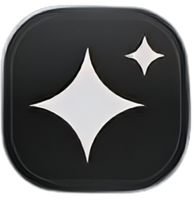
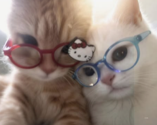

01 / IMAGE
Color with intention.
Give your visuals a cleaner finish with brightness, color, and contrast-style adjustments.

YOKOENHANCERMeet YokoEnhancer — a creator-focused enhancement tool built to help your images and videos look sharper, richer, and ready to stand out.
Two transformations. One simple drag. Choose a sample, then slide across the frame to compare the original with the enhanced version.

Look beyond the blur. Bring textures, edges, and the little details back into focus.
THE YOKOENHANCER APPROACHA focused toolkit for the finishing touches that make your content feel intentional. Your exact results depend on the source media and your PC.
Give your visuals a cleaner finish with brightness, color, and contrast-style adjustments.
Bring edges and fine details forward with sharpening tools.
A desktop-first tool for people who want more control over their media workflow.
No paid tiers or subscription upsells. YokoEnhancer is presented here as completely free to use.
YokoEnhancer can process demanding images and videos. For fast, efficient results, use a PC with good specifications — especially when working with large files, high resolutions, or AI-powered operations.
Get YokoEnhancer for Windows and start building your own look. The installer is hosted on Google Drive.
Quick install tip
Because the installer is over 1 GB, use a stable connection and make sure you have enough free disk space before downloading. If Google Drive displays a confirmation screen, follow its download prompt.
Good tools should help you create —
not make you pay just to begin.